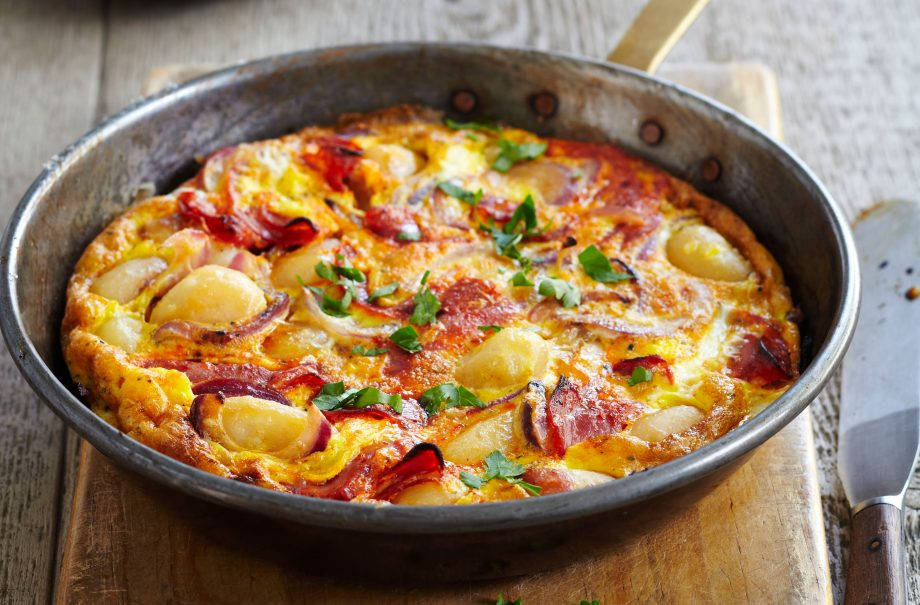

Gary Rhodes’ bacon and potato frittata recipe

Serves:
Cost:
Prep:
Cooking:
Skill:
4
Cheap
10 Min
35 Min
Easy
This quick frittata recipe is super easy to make and requires very little washing up. Trust celebrity chef, Gary Rhodes, to help you turn some humble eggs, potatoes and bacon into a delicious and cheesy frittata recipe for brunch, lunch or dinner.
Frittata is a great option for an easy weekend treat breakfast. It’s quick to make and you can use up any salad or vegetables that you have lying around in the fridge. Plus it’s way to serve the whole family without creating too many dishes – all you need is a frying pan and a spatula (maybe throw in a knife and chopping board too…).
This frittata recipe serves four people, so you can cook a delicious meal for the whole family using this recipe. It will take around 45 mins to make this recipe, so you won’t have to spend much time in the kitchen, but the best part is that it can be made for under £1 a head – so it’s also a really cheap recipe to make at home. This tasty frittata is a family-friendly recipe made with bacon, soft potatoes and plenty of eggs. To make it a more substantial meal, you can serve it on a bed of fresh salad leaves or if you’re serving for breakfast or brunch we’d recommend serving with baked beans. Gary Rhodes’ bacon and potato frittata is best eaten on the day it’s made.
To turn this into a tasty lunchbox snack, pour the mixture into a muffin tin and pop in the oven until cooked through.
Ingredients
-
2 medium-large potatoes, peeled and quartered
- 225g cubes of bacon, pancetta or ham
- 6 spring onions, finely chopped
- 100g Cheddar cheese, grated
Method
- Cook the potatoes in boiling salted water for 20-25 mins or until cooked through. Drain and leave to cool slightly before cutting into cubes.
- Heat a non-stick frying pan, preferably 20cm in diameter. Fry the bacon or pancetta, if using, until golden, then drain off any excess fat. Add the butter, diced potatoes and half the spring onions, cooking for a few mins over a low heat.
- Preheat the grill.
- Beat the eggs, adding half the Cheddar. Season with the salt and pepper. Pour the eggs over the bacon and potatoes. Stir gently in the pan for a few mins, allowing the tortilla to cook over a very low heat until it begins to set, leaving just a moist surface.
- Sprinkle the remaining spring onions and Cheddar on top and warm under the grill until the top has set and the cheese melted. Cut the tortilla into wedges to serve.
Top tip for making Gary Rhodes’ bacon and potato frittata
Sprinkle with cheese and pop under the grill before serving for a crispy, cheese topping